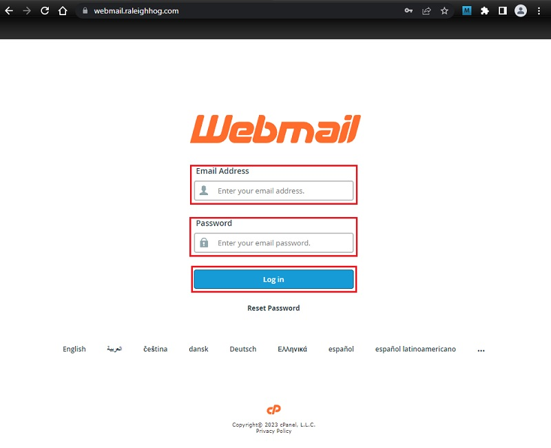
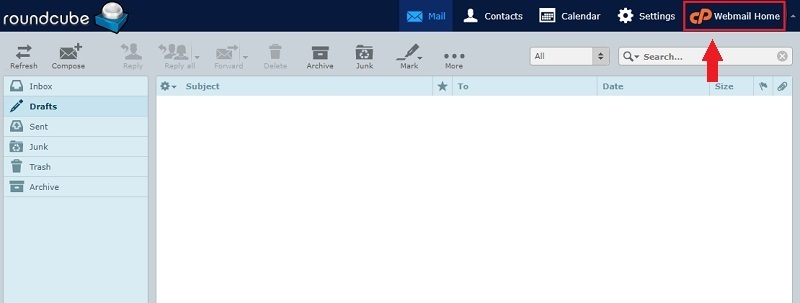
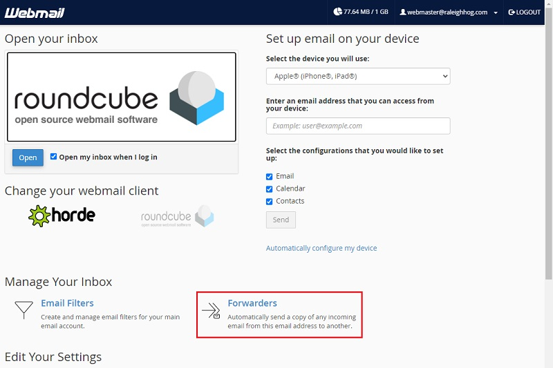
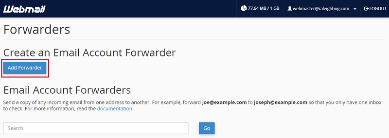
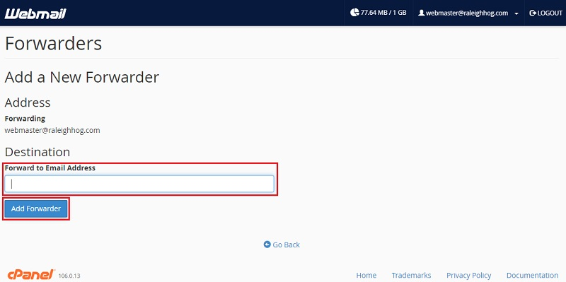

Webmail - Forward Email to Your Personal Account
General notes, terminology and policies
- This environment is different than the website. To login to your email;
- In the address bar of your browser enter webmail.raleighhog.com
- Fill in the email address and password that were provided to you in a separate email
Note: This is not the userid/password you use to login to the website
- This tutorial shows how to forward emails sent to xxx@raleighhog.com to your personal email account
- There is no requirement to forward your emails
- A good practice when replying is to login to your xxx@raleighhog.com and reply from there, keeping your personal email address private
- Using xxx@raleighhog.com
- allows the address to be published in calendar events, thus not exposing your private information
- allows the next person stepping into the role to see any unfinished business
- allows chapter members to have one address for correspondence with chapter officers
Forward Emails
- Enter the Email Address and Password that were provided to you, then click the Log in button to login. see image below 
- Click Webmail Home
Note: your screen may look different than the image. Webmail Home may be on the left side, at the bottom see image below 
- In the screen that opens, click Forwarders. see image below 
- In the screen that opens, click the Add Forwarder button. see image below 
- In the screen that opens;
- Fill in your personal email address
- Click the Add Forwarder button
see image below 
- That's it! When members send email to your xxx@raleighhog.com address, a copy of the email will also be sent to your personal account.
A good practice is to login to xxx@raleighhog.com when replying to keep your personal information private. It also allows the next person stepping into the role to see if additional steps are required.